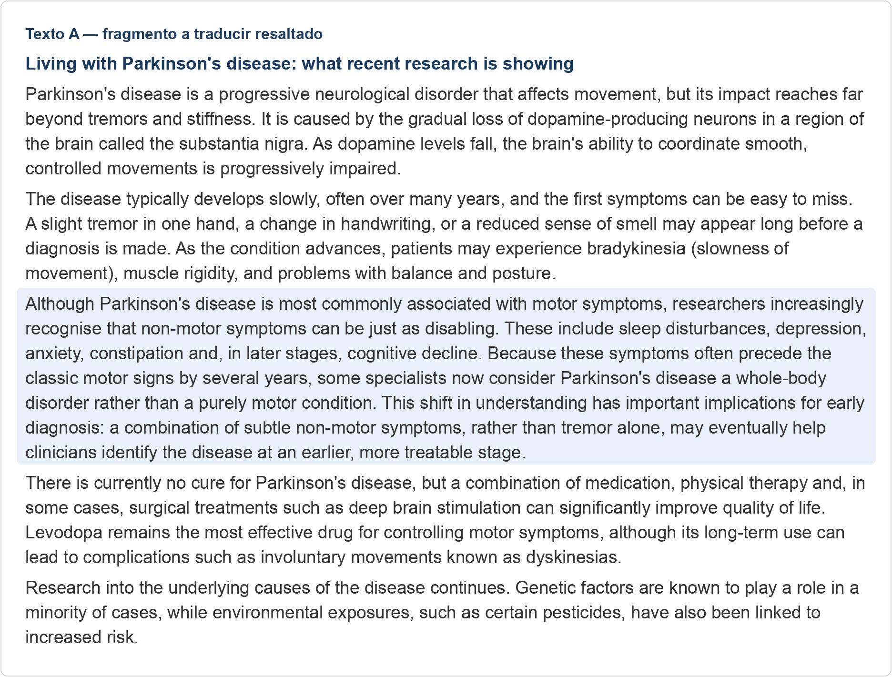
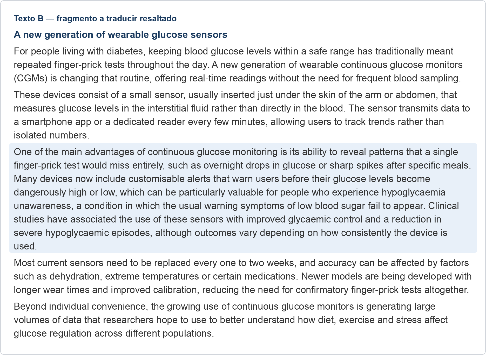
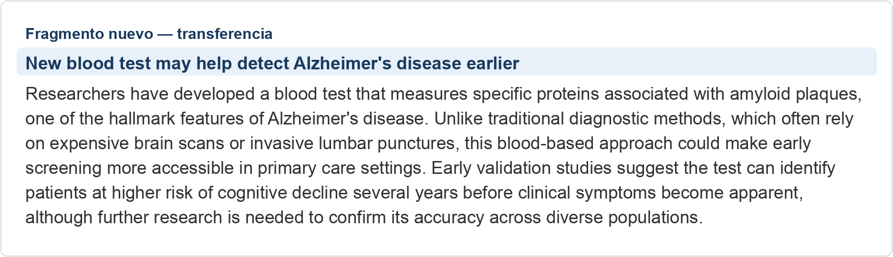

Texto A · Párkinson

Pulsa sobre el texto para verlo más grande.
Traducción de referencia
Texto original del fragmento
Términos que suelen plantear dudas
| Original | Propuesta | Matiz |
|---|---|---|
| non-motor symptoms | síntomas no motores | Sin guion. |
| disabling | incapacitante | Cuidado con el falso amigo «deshabilitante». |
| whole-body disorder | trastorno de todo el organismo | También «trastorno sistémico». |
| tremor | temblor | |
| clinicians | clínicos |
Texto B · Sensores de glucosa

Pulsa sobre el texto para verlo más grande.
Traducción de referencia
Texto original del fragmento
Errores frecuentes de la traducción automática
| Original | Propuesta | Matiz |
|---|---|---|
| finger-prick test | prueba de punción digital | Evita versiones demasiado literales o coloquiales como «prueba de pinchazo en el dedo». |
| hypoglycaemia unawareness | hipoglucemia asintomática / inadvertida | Es un concepto clínico establecido; no «desconocimiento de la hipoglucemia». |
| glycaemic control | control glucémico | |
| customisable alerts | alertas personalizables | No pierdas el matiz de personalización. |
Si respondiste sobre la Tarea A (Párkinson)
Idea principal: los síntomas no motores (trastornos del sueño, depresión, ansiedad, estreñimiento y, más tarde, deterioro cognitivo) pueden ser tan incapacitantes como los motores y suelen aparecer años antes; por eso algunos especialistas consideran el párkinson un trastorno de todo el organismo.
Matiz clave: esto tiene implicaciones para el diagnóstico precoz: una combinación de síntomas no motores sutiles, y no solo el temblor, podría ayudar a identificar la enfermedad antes.
| Término original | Propuesta de referencia |
|---|---|
| non-motor symptoms | síntomas no motores |
| disabling | incapacitante |
| whole-body disorder | trastorno de todo el organismo |
Si respondiste sobre la Tarea B (sensores de glucosa)
Idea principal: la monitorización continua de glucosa revela patrones que una única punción digital no ve (caídas nocturnas, picos tras las comidas) y permite alertas personalizables antes de que la glucosa llegue a valores peligrosos.
Matiz clave: es especialmente valiosa en la hipoglucemia asintomática; los estudios la asocian con mejor control glucémico y menos hipoglucemias graves, aunque el resultado depende de la constancia de uso.
| Término original | Propuesta de referencia |
|---|---|
| finger-prick test | prueba de punción digital |
| hypoglycaemia unawareness | hipoglucemia asintomática / inadvertida |
| glycaemic control | control glucémico |
Fragmento nuevo · Análisis de sangre para el Alzheimer

Pulsa sobre el texto para verlo más grande.
Traducción de referencia
Texto original del fragmento
Términos clave de este fragmento
| Original | Propuesta | Matiz |
|---|---|---|
| amyloid plaques | placas amiloides | |
| hallmark features | rasgos característicos / distintivos | |
| lumbar punctures | punciones lumbares | |
| primary care | atención primaria | |
| cognitive decline | deterioro cognitivo | Ya aparecía en el texto sobre el párkinson. |